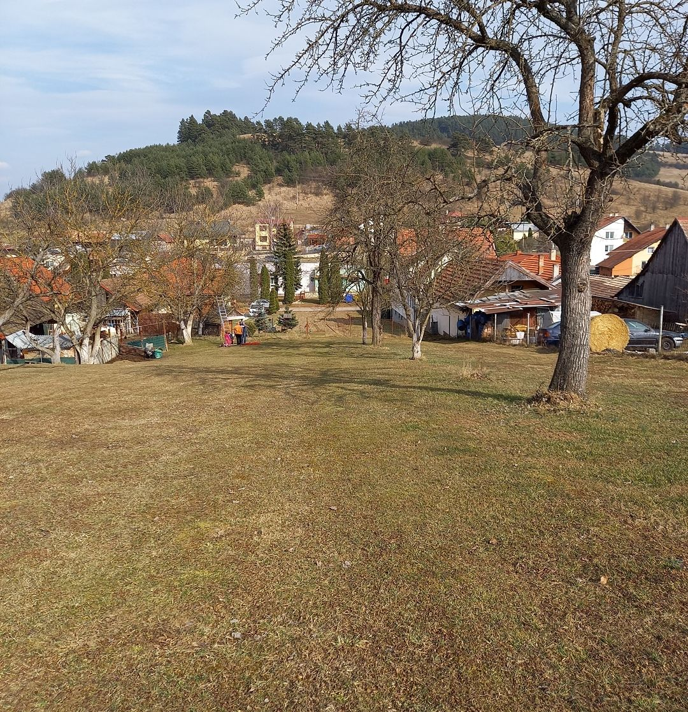

Ovocie podľa @domace_wilko_dobroty — Normy Jedál
🌎 Deň Zeme 22.4.
Dnešný Svetový deň Zeme nám pripomína, ako naše konanie a myslenie ovplyvňuje planétu a prostredie v ktorom žijeme.
Počas pandémie sa práve príroda pre nás stala útočiskom, v ktorom sme hľadali povzbudenie, trpezlivosť, pokoru.
❤ Kde niečo končí - niečo nové začína.
🙏 Začnime si viac všímať, viac sa zaujímať, viac reagovať ak nesúhlasíme.
🤗 Posielam vám
📷 foto našej záhrady 🥰🌳
#nasazahrada #domacejedomace #natural #domacewilkodobroty #domov #denzeme #priroda #zdravie #radost #ovocie #zelenina